Argosy — User Guide
How you actually use the whole system — orientation, the three workflows, per-tab detail.
1. What Argosy is
Argosy is two things glued together:
- An always-on Python orchestrator that watches your portfolio and the market continuously, with cadences running at minute / hour / daily / weekly / monthly / annual rhythms.
- A Next.js dashboard at
localhost:1337where you read state, approve proposals, and negotiate with the agent fleet.
The engine convenes a fleet of AI specialists (analysts, debate, risk officers, fund manager) to debate any non-trivial move. Each rationale is persisted, so months later you can ask why something happened and get a real answer.
The user-visible surface is split into 16 tabs, but the working flow only routes through 5-6 of them regularly. The rest are inspection / debugging tools.
2. The top nav at a glance
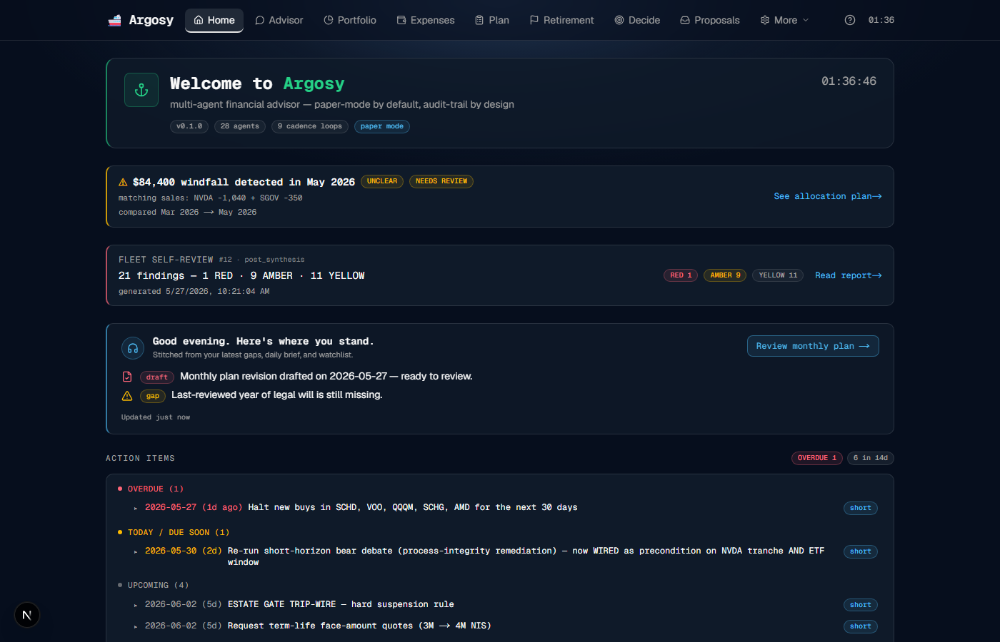
The top nav shows the 9 PRIMARY tabs always; the 7 INSPECTION tabs collapse behind a "More" dropdown so the daily nav doesn't carry surfaces you only touch monthly or for debugging.
- PRIMARY (always visible, in session-flow order) — · · · · · · · · .
- INSPECTION (under "More") — click "More" to reveal: · · · · · · . The "More" button pulses active when you're currently on one of these pages, so you can tell from the nav alone that you're inside the inspection group. Click outside or press Escape to close.
| Tab | Job in your flow | How often |
|---|---|---|
| PRIMARY | ||
| Read where you stand · catch fired triggers | Daily | |
| The data-entry portal. Chat + attach files + gap-tracker rows on the right. | Daily-to-weekly | |
| Current FIRE position + financial-independence chart | Weekly | |
| Spending dashboard with sub-tabs (Overview/Monthly/Transactions/Sources/Merchants/Trips/RSU/Income) | Weekly + monthly drill | |
| Structured intake for career / family / asset / expense / recurring / retirement-milestone events | On change | |
| Current draft plan from the agent fleet. Per-objection AGREE/DISAGREE/DEFER. | When synthesis lands | |
| Read-only long-term view — Holistic Timeline + fat-tail-aware P(ruin) verdict + safety gates | Monthly + on-trigger | |
| Ticker-decision intake — submit symbol + rationale, fleet returns Buy/Sell/Hold | When you want a fleet opinion | |
| Queue of trade proposals awaiting approval | Daily | |
| INSPECTION | ||
| $1K bounded auto-trading account | Monthly check-in | |
| Agent fleet activity log | Debugging | |
| Audit-traceable catalog of every uploaded file. Read-only. | Reference | |
| Full decision audit log | Rare provenance research | |
| Israel-resident knowledge base | Reference | |
| Per-feature config | Setup only | |
| Web push + weekly email digest opt-ins + per-(channel × severity × kind) preference matrix | Setup only | |
3. How data gets in
Two kinds of input. Structured uploads for files Argosy knows how to parse; free-form chat for everything else.
- Structured upload tiles — for monthly bank statements (Leumi, Schwab, Discount, Cal, Max); for the monthly portfolio-status snapshot (TSV or a raw Leumi monthly XLS that auto-pairs with the Osh statement); for catalog-only docs (payslip, tax letter, screenshots).
- Advisor chat at — free-form text or attached PDFs/images/markdown for the long-tail: "I just got a 50K USD bonus", "We're expecting our second kid in November", "I'm switching from Migdal to Clal." The Advisor extracts structured fields and updates the relevant gaps. Limits: 10 MB per file, 20 MB per turn.
All four routes flow through the same backend funnel (catalog_upload, SDD §17.1) — every byte is catalog-traceable in .
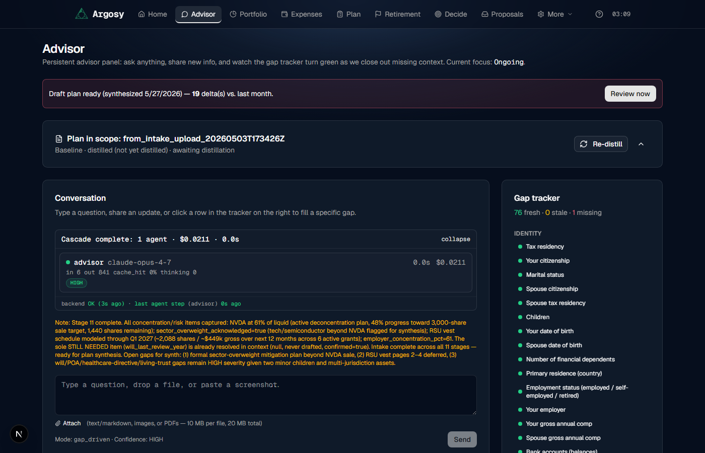
4. The three workflows
Argosy supports three workflows. Read this section for the high-level shape; the walkthroughs that follow drill into each one step-by-step.
Flow 1 — Retirement planning + tracking
The long-horizon flow. You do the intake once; the agents track monthly; anything off track surfaces on Home.
- Intake — open and fill the gap tracker (Identity, goals, financial picture, broker connections, plan, ops prefs, estate, insurance, tax, education, special situations). Plan on several hours of data collection the first time — statements, tax filings, insurance policies, vest schedules. Free-form chat or paste a bulk update; the Advisor extracts structured fields.
- Plan synthesis — the agent fleet drafts a plan from your intake. The synthesizer runs analyst → debate → synth → risk → fund manager phases and produces a draft with stress-tested assumptions (Monte Carlo enters at the retirement-verdict stage, not the draft stage). Iterate on : AGREE/DISAGREE/DEFER per FM objection, then "Start new round with my decisions" to resynthesize until the FM accepts.
- Retirement view — open for the holistic status: expected retire-ready age (bear/base/bull), P(solvent at 95) under fat-tail-aware regime-switch Monte Carlo, the Holistic Timeline (past + projected RSU vests, life events, retire-ready bands on one axis), safety gates, and tax/decumulation/insurance subsections.
- Tracking + red flags — once the plan is accepted, the agents track monthly. Anything emergent (FX drift, position weight outside plan-target, cash glut, MC regression, macro shift) surfaces as a flag on the Home Red-Flag Strip. See Flow 3 for the full automation surface.
- Feeding red flags back to the plan team — two paths:
- Auto: when the state observer (§22) emits a critical flag, observer→replan (§24) fires a full 5-phase resynthesis with the flag context threaded into every agent's prompt. The new draft lands on with an "observer-triggered" banner + a "Replan" row on for explicit acceptance.
- Manual: open , walk the FM objections, DISAGREE on what's now load-bearing and type your counter-position, then "Start new round with my decisions." Synthesis re-runs with your toggles as
user_directive.
effective_retire_ready_age()) and clamped by every constraint it knows about. The AI will not suggest a retire date that ignores near-term obligations:
- Upcoming RSU vests — clamped to the latest known vest + a 90-day projection. If you have a large vest in September, the base age won't fall before that date.
- Life events — every row on (one-shot outlays, recurring expenses like a new car every 5y, phase changes like a kid leaving home) feeds into the cashflow projection via
apply_life_event_deltas(). - Phase expenses + healthcare curve — modeled per-phase, not as a flat baseline.
- Tax + decumulation order — Israeli pension exemption, Hishtalmut withdrawal tax, lump-vs-annuity tradeoffs.
Flow 2 — Household finances maintenance
The monthly flow. Two drops, in any order; agents handle the rest.
- Drop expenses — bank + credit statements onto . The pipeline parses each issuer, dedupes against prior ingests, and auto-categorizes each transaction via the
household_categorizeragent. - Drop portfolio snapshot — TSV or Leumi monthly XLS onto (or click Generate TSV now if you only need to refresh cash rows from latest bank statements).
- Review anomalies — the transaction-level detector flags rows across four buckets (amount outliers, watchlist + recurring, novel merchant / category drift, cross-card duplicates). Findings surface as inline badges on transaction rows + an AnomalyHighlights card on Home for amber-or-higher severity. Detail in §18.
- Review allocation suggestions — when current cash exceeds plan-target by 1.5× (routine paycheck residue) or when a snapshot diff reveals a $25K USD / ₪75K NIS cash spike (one-off RSU sale, bonus, gift), the system surfaces suggested buys against your plan-target gaps. Accept/Defer per row.
- RSU pre-vest warnings — the UpcomingVestCard projects upcoming vests at +90d cadence per grant, with three-scenario post-tax estimates and an allocation preview for the post-tax nominal cash.
Flow 3 — Daily automation
The background flow. Runs without your involvement; surfaces on Home (Red-Flag Strip + daily-brief + action items) and optionally as push or weekly email.
- News pipeline — RSS + macro feeds pulled daily; a materiality classifier rates each item HIGH/MEDIUM/LOW; HIGH fires a monitor flag (§20).
- "What others are doing" — the predictions ledger (§23) records every directional call from external sources (Discord channels, news signals, third-party analysts) as a prediction at issue time, scores it against actual price action when the window closes, and maintains per-source reliability weights. Sources with positive alpha get up-weighted; sources that underperform get downweighted automatically. The system already covers a Discord alpha-report channel; 13F filings + additional sources can be added.
- State observer — daily at 17:00 IDT, an Opus agent diffs current state vs prior snapshot and vs the plan baseline; emergent anomalies (FX drift, cash glut, regime shift) fire flags onto the Red-Flag Strip.
- Inferred life events — daily scan of transaction history for phase changes the user hasn't entered manually (tuition stopped, recurring car payment, wedding-scale transfer). Shadow-mode first 30 days; then surfaces as "Add inferred life event" proposals.
- Suggested actions — when the agents agree a ticker should be bought/sold/trimmed (short or medium horizon), a trade proposal lands on with the rationale + the cited sources.
- Notifications — opt-in browser push (per-severity routing) + Friday 08:00 IDT weekly email digest. See §25.
5. First-time setup
This is the foundation phase for Flow 1. Plan on several hours of data collection — the better the intake, the better the plan. You'll be gathering recent bank + credit statements, the latest portfolio snapshot, your RSU vest schedule, insurance policies, and any tax-relevant facts (residency, brackets, dependent count). Most of it can be entered in one sitting once the source documents are on hand.
<UploadStatementsCard> at the top of — faster for batches, multi-file drag-drop, per-file results render inline; (b) Attach one at a time on chat — better when you want to narrate context. Either way, the expense pipeline parses each statement and rows populate on .6. Monthly cadence — drop both halves
The recurring monthly workflow is two drops, in any order. That's it. Everything downstream — categorisation, snapshot persistence, anomaly flagging, cash-spike detection, replan triggers — fires automatically.
Half A — Bank statements →
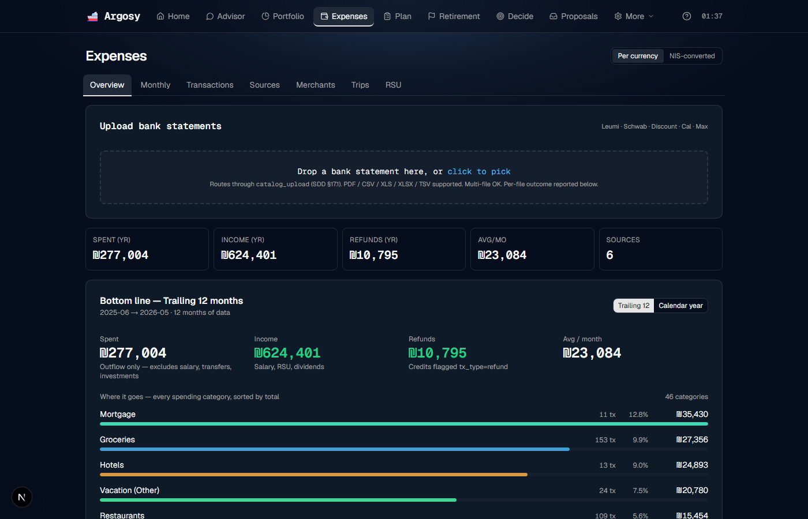
<UploadStatementsCard> sits above the dashboard. Multi-file drag-drop; per-file PARSED / FAILED outcomes render inline.household_categorizer show up without a page reload.Half B — Portfolio snapshot →
Half B is input-only — drop a fresh snapshot and you're done. Detection (one-off cash spikes), routine allocation prompts (paycheck residue), classification, and ranked allocation suggestions all run downstream. The full mechanics live in §10.
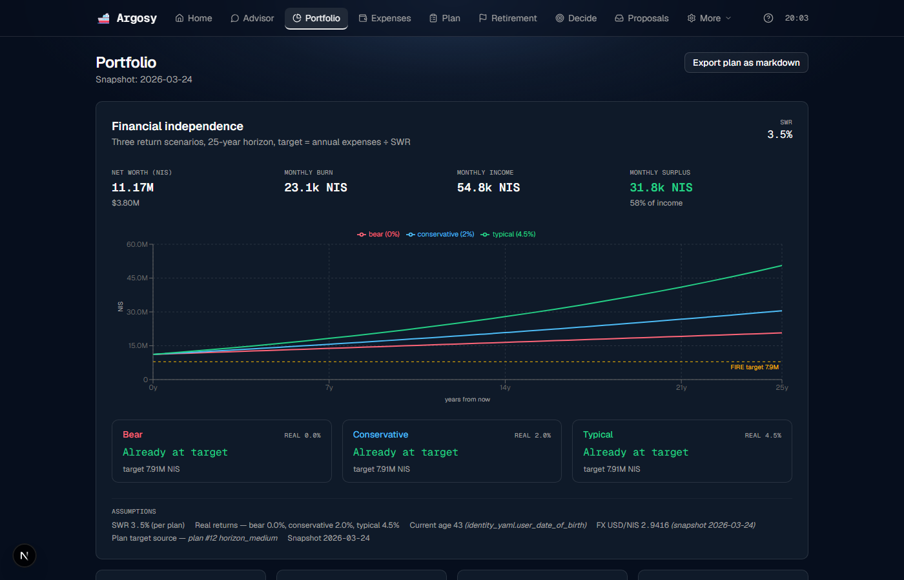
<GenerateTsvCard> sits above <PortfolioSnapshotUploadCard>. Generate is the everyday path; upload is the input flow for a fresh Leumi monthly XLS.snapshot_date bumped to today. Persisted under $ARGOSY_EXPENSE_SAMPLES_ROOT.That's it for Half B. The downstream surfaces (Home cash-spike banner, queue, <UnallocatedCashCard> on ) appear automatically when the new snapshot triggers them — see §10 for what those surfaces show and how to act on them.
7. Plan → Retirement loop
The natural order is Plan first, then Retirement. Plan is where decisions are made and re-runs are kicked off; Retirement is read-only visualization on top of the plan's accepted assumptions. They answer different questions:
| Page | Answers | Timescale |
|---|---|---|
| "What should I DO this month/quarter?" | Tactical · short + medium horizon | |
| "Can I retire? When? At what risk?" (read-only) | Strategic · 30+ year horizon |
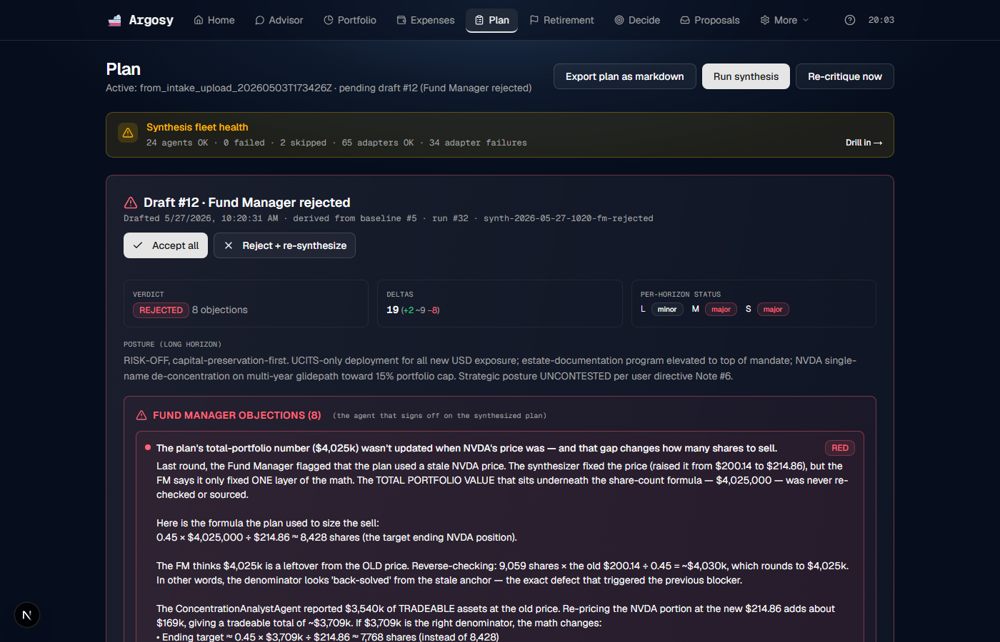
user_directive. Takes ~70 min for the full Opus stack.8. Home in detail
What each block does:
- Anchor banner — version + agent count + cadence count + mode badges. Mode is paper / live / queue_only.
- Red-Flag Strip — sits at the very top of the page (above the anchor banner) when there are active
monitor_flagsrows. Each flag renders as a single line: severity dot (red = critical, amber = warning, yellow = informational), short text describing what was detected, dismiss button (×). Click × and the flag is marked dismissed; the strip re-renders without it. With zero active flags the strip occupies zero vertical space — Home looks identical to the pre-strip layout. - Fleet self-review — automatic post-synthesis audit of the agent fleet's own output (10 deterministic detectors). Link goes to .
- Daily-brief card — stitched from the day's gap deltas + investor-event signal + watchlist anomalies. "Review monthly plan" CTA → .
- Action items widget — pulled from the active plan's short + medium horizon. Bucketed OVERDUE / TODAY / DUE_SOON / UPCOMING.
- Synthesis history (below the fold) — accordion of every prior agent-fleet run with cost + agent count + timestamp.
9. Advisor in detail
Layout:
- Top banner — "Draft plan ready · 19 delta(s) vs. last month" + Review now CTA.
- Plan in scope bar — which intake-upload doc is being used as the baseline + a Re-distill button.
- Conversation panel — Cascade footer ("0 agents · $0.0000 · 0.0s") shows multi-agent cost of your last turn. Type a question, drop a file, paste a screenshot.
- Attach pill — text/markdown, images, or PDFs. 10MB/file, 20MB/turn.
- Gap tracker — right-side panel. Rows grouped by stage. Click any row → chat focuses there.
The gap tracker
The right-side panel groups ~75 required fields under 11 stages (Identity · Goals · Financial picture · Broker connections · Plan · Ops prefs · Estate · Insurance · Tax · Education · Special situations). Each row is colored:
- fresh — value is recent enough for the field's freshness policy (e.g. portfolio_value monthly, identity annually)
- stale — past freshness window; should be refreshed
- missing — never filled
Two ways to fill or refresh a row from this surface:
- Free-form text in the chat. "I just got a 50K USD bonus paid today" or "We're expecting our second kid in November" or "I'm switching from Migdal to Clal." The Advisor extracts structured fields and updates the relevant gaps + propagates to the projections.
- Attach a file. Click the Attach pill (text/markdown, images, or PDFs — 10 MB per file, 20 MB total). Drop a Leumi statement PDF, a Discount Mastercard statement, a Schwab CSV, a screenshot of your payslip. The ingestion pipeline parses it server-side; the catalog row appears in ; the relevant dashboard surface refreshes once parsing completes.
catalog_upload backend the Advisor uses. also has a generic upload tile for anything that doesn't fit a parser. Everything else (Plan, Retirement, etc.) is read-only.
10. Portfolio in detail
The monthly snapshot upload tile
Top of ships a drag-drop tile that accepts the monthly Family Finances Status - YY MMM.tsv file. Drop it in (or click to pick); the route persists the TSV under ARGOSY_EXPENSE_SAMPLES_ROOT and synchronously runs the windfall detector against the prior month's snapshot. The per-upload result row surfaces tri-state status inline: PERSISTED + windfall-detector outcome (skipped = no prior TSV to diff; ok + no event = below threshold; ok + event = a banner appears with a deep-link to for the full plan).
The upload tile accepts both TSV files and Leumi monthly portfolio XLS exports. XLS uploads pair with the matching Leumi Osh current-account statement for the cash row (±15-day match window, bidirectional); until the pair lands the XLS upload renders as AWAITING OSH. Once both halves are present, Argosy synthesizes the canonical TSV and runs the windfall detector synchronously.
Unallocated-cash tile
Below the upload tile sits the <UnallocatedCashCard>. It renders only when current cash exceeds your plan-target cash by 1.5x or more (self-tuning ratio, no fixed dollar threshold). When fired, it shows the excess + a ranked list of suggested buys, each with live Accept and Defer buttons. Click Accept and a row in allocation_actions is persisted with action_source='unallocated_cash'; the row re-renders as a "✓ Accepted" pill inline on next fetch. Defer takes an optional due date and renders "↻ Deferred".
Verdict column on per-account tables
Each per-account positions table (one per Leumi / Schwab / Aborad account) gets a Verdict column on the right: a HOLD / BUY / TRIM / SELL / ADD pill sourced from the per-position thesis on the current accepted plan draft. Tones are picked so HOLD (the most-common verdict) reads as background; BUY/ADD shine emerald, TRIM amber, SELL rose. Hover for the conviction + first 200 chars of reasoning; click jumps to the full per-position thesis at .
The FIRE-position view
Below the upload tile: the financial-independence chart + position aggregates. Different from :
| This page | Question answered | Engine |
|---|---|---|
| Am I at FIRE today, under simple 25-yr SWR math? | Deterministic — 3 scenarios (bear 0%, conservative 2%, typical 4.5% real return) · SWR 3.5% | |
| Will I stay solvent through 95 under fat-tail / FX / Israeli-tax / regime-switch risk? | Stochastic — regime-switch MC + bootstrap CI + age-aware tax + stochastic FX |
Both can coexist. /portfolio says "Already at target" under all three scenarios. /retirement says "OFF TRACK at 57% P(solvent at 95)". Both are right at their own level of conservativeness — the Portfolio chart shows the optimistic-deterministic story, Retirement shows the conservative-stochastic truth.
11. Expenses in detail
Sub-tabs:
- Overview — what's shown above. Trailing 12 vs Calendar year toggle. Per-currency vs NIS-converted toggle.
- Monthly — month-by-month bar chart + per-month drill. Where you spot anomalies.
- Transactions — flat row-level view. Search + filter. Inline category-edit.
- Sources — per-issuer health (Leumi-NIS · Leumi-USD · Discount · Cal · Schwab · Max).
- Merchants — merchant-level rollup. Bulk relabel from here.
- Trips — auto-detected travel periods (hotel + restaurant + transport cluster).
- RSU — Schwab disbursements vs Leumi USD wire credits cross-validation. Drop a Schwab Equity Awards CSV (filename
EquityAwardsCenter_Transactions.csvor the date-stamped variant) anywhere under$ARGOSY_EXPENSE_SAMPLES_ROOT. The monthly_cycle picks it up automatically (1st of the month at midnight); for an on-demand refresh,POST /api/portfolio/refresh-rsu-vestsingests it immediately. The parsed vests land inrsu_vest_events, surface on the Holistic Timeline at , and feed the latest-vest clamp oneffective_retire_ready_age(). Ingest is idempotent — re-runs against the same CSV don't duplicate. - Income — per-month income breakdown (salary + dividends + bonus + side-income + RSU rollup), with month-shift navigation. Parallel to the expense-side detail.
Categorizing transactions
Each transaction is auto-categorized via the household_categorizer agent (Opus-backed by default, per the accuracy-over-cost binding preference). Most rows land in the right bucket; some need manual correction:
- Inline category edit (Transactions sub-tab). Click the category cell on the misclassified row. Type the new category or pick from autocomplete. The choice is recorded in
category_overridesand the agent learns from this for future similar merchants. - Bulk-relabel via the Merchants sub-tab. If you want every "Cofix" charge to map to "coffee" instead of "restaurants", do it once at the merchant level and it back-propagates to all matching rows.
12. Life Events in detail
The page where life-events that change how your expenses behave over time are entered. Anything that shifts the cashflow projection — kid leaves home (monthly expenses drop), wedding (one-shot outlay), new car every 5y (recurring expense) — gets recorded here so the plan engine sees the right shape.
Three-section form
The form is split into three sections, picked at the top:
- One-shot — a single dated outlay or inflow. Kind, date, amount, currency. Examples: wedding, property down payment, inheritance, one-time bonus.
- Recurring — a repeating cashflow with a start date, optional end date, and interval. Kind, period (monthly / annual / every-N-years), amount, currency. Examples: new car every 5 years, annual tuition top-up, monthly support payment to a parent.
- Phase-change — a step change in baseline monthly expenses starting on a given date. Kind, effective date, monthly delta (positive or negative), currency. Examples: kid leaves home (delta −₪3,000/mo), second kid starts daycare (delta +₪4,500/mo), partner returns from parental leave (delta −₪2,000/mo income offset).
Saving + the 422 banner
Each section validates against its own kind × delta-shape schema. On failed validation the page renders a structured error banner at the top of the form. The banner names the field that failed and lists the valid alternatives the backend accepts. No generic "invalid input" message — the banner tells you exactly what to change.
Saved events land in the life_events table and feed two surfaces: the cashflow projection (per-month deltas applied via apply_life_event_deltas() during projection runs) and the Holistic Timeline on (each event appears as a marker at its date, with shape-aware tone — one-shot, recurring, phase-change).
13. Plan in detail
The page lifecycle:
- Monthly cycle fires (1st of month) — 5-phase synthesis: 10 analysts → 2 debate teams → synthesizer → 3 risk officers → fund manager. ~30-70 min depending on stack.
- FM verdict lands — either ACCEPTED or REJECTED with N objections.
- Page renders the draft — rejection summary + per-objection details, severity-color-coded.
- Per-objection toggle — AGREE · DISAGREE · DEFER. DISAGREE opens a counter-position textarea. "Discuss with [analyst]" launches an FM↔analyst dialogue.
- "Start new round with my decisions" — re-runs synthesis with your toggle decisions as
user_directive. Loop continues until FM accepts or you accept anyway.
14. Retirement in detail
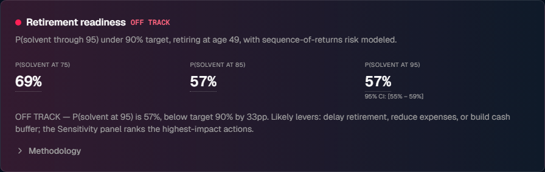
Read-only visualization on top of the plan's accepted assumptions. Cards render verdicts and projections; nothing on this page kicks off a new synthesis or accepts a proposal — that happens on and . The sticky left-sidebar TOC navigates 13 named sections.
Holistic Timeline
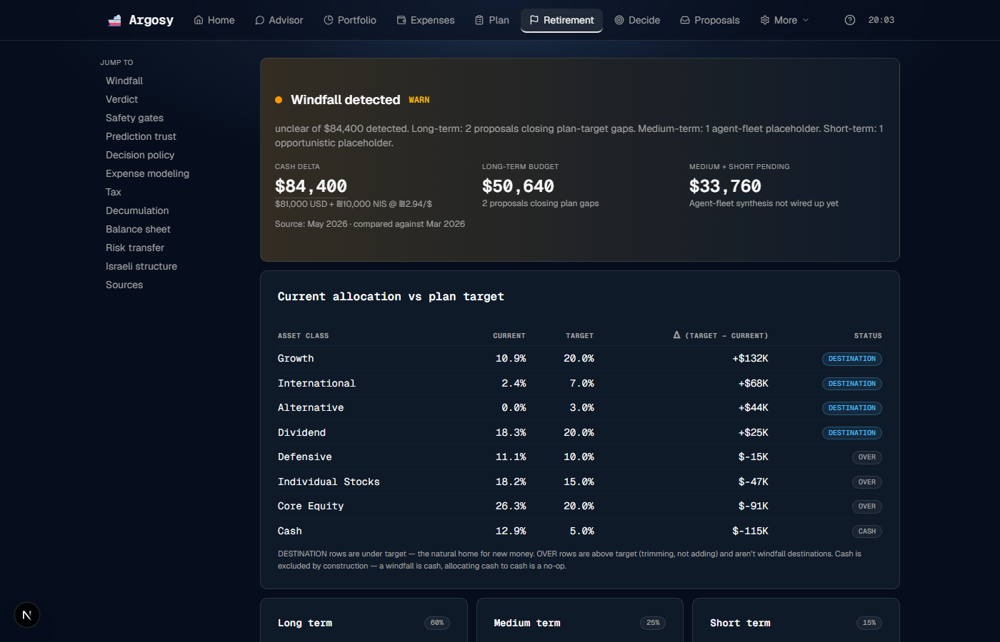
A single horizontal axis carries four layers at once:
- Past vests — historical RSU vest events from
rsu_vest_events(populated by the Schwab CSV ingest). - Projected vests — future scheduled vests out to the horizon, with a 90-day projection past the latest known vest.
- Life events — markers for each row in
life_eventsat its dated position. - Retire-ready zones — three bands (bear / base / bull) sourced from the canonical
effective_retire_ready_age(). The base band is the headline projection; bear and bull frame the uncertainty.
Controls: a horizon selector (10y / 30y) at the top of the card, a Today indicator as a vertical reference, and hover tooltips on every marker showing event/vest detail.
Expected retirement age
The ExpectedRetirementAgeCard surfaces the three scenarios from effective_retire_ready_age() — bear / base / bull — sourced from the cashflow projection on the current plan draft, then clamped by (1) the latest known RSU vest plus a 90-day projection and (2) any retirement-milestone events on . Every retire-ready-age value across the UI (Holistic Timeline bands, the hero card, the safety gates) flows through this single function — they will not disagree.
19 cards in 13 named sections, navigable via the sticky left-sidebar TOC.
"Will the money last if I retire then?" — RuinProbabilityHero below: P(solvent at 75/85/95) under fat-tail-aware regime-switch Monte Carlo. The two cards are complementary — the first answers WHEN, the second answers HOW SAFE.
| Section | What's there |
|---|---|
| Windfall | (moved) WindfallCard now lives at . is read-only — windfall decisions belong on the proposals queue. |
| When can I retire? | ExpectedRetirementAgeCard — three age blocks (base prominent, bear and bull as guard-rails), with a footer cross-referencing the plan's target age. |
| Verdict | RuinProbabilityHero (the OFF_TRACK card above) |
| Safety | SafetyGatesPanel — NRA estate · Emergency liquidity · Conflict scenario |
| Predictions | Sigma calibration · Withdrawal policy selector (VPW/Bucket include a caveat that they avoid literal zero-balance ruin without guaranteeing essential-expense coverage) · Stochastic FX |
| Decision policy | Glide path · Rebalancing alerts |
| Expenses | Phase expenses · Healthcare cost curve |
| Tax | Tax calculator · Hishtalmut timer (with the eligibility check + withdrawal-tax explorer covered in §14.1 below) |
| Decumulation | Decumulation order · Lump-vs-annuity (recommendation includes the trade-off rationale: annuity floor vs lump flexibility) |
| Balance | Real estate + mortgage |
| Risk transfer | Insurance gaps (4 types) |
| Israeli | Bituach Leumi stipend · Mekadem variance band |
| Sources | Methodology + 19-entry sources panel |
15. Files in detail
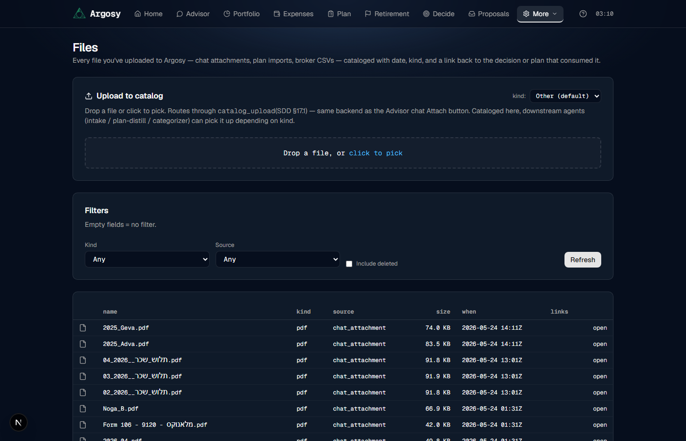
Two halves:
- Upload tile (top of page) — drag-drop or click-to-pick + a Kind dropdown (text / image / plan_markdown / broker_csv / other). Routes through
catalog_uploadwithsource="manual_upload". Use this when the file doesn't fit a parsing pipeline (a payslip, a tax letter, anything destined for the catalog rather than the expense or portfolio tiles). - Catalog table (below) — every row Argosy has on file. Each row shows: filename · Kind · Source bucket · Size · When · Open link. Filters: Kind · Source · Include deleted toggle.
16. · ·
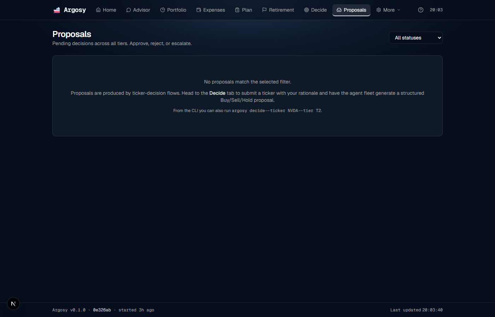
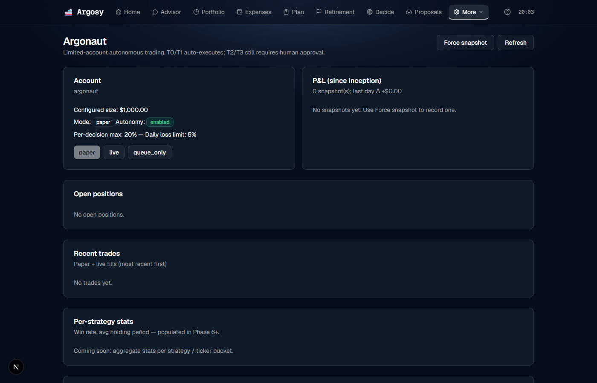
The trade-decision flow:
- Submit a ticker via — enter symbol + rationale, pick tier T1 / T2 / T3. The agent fleet (analysts → bull/bear debate → trader → risk → fund manager) returns a Buy/Sell/Hold verdict and persists a trade proposal. T1 is the fastest (3 analysts + 1-round debate + 1 risk perspective); T2 runs the full 9-analyst fleet; T3 adds plan-critique sign-off + cooling-off mechanics.
- The accept-or-reject decision lives on . The trade proposal lands there for your approval.
- Approve / Reject / Escalate on . Every action requires a human click today.
- Filled orders surface in (Recent trades) and .
/proposals — the action queue
The Proposals page is the single inbox for every system-generated action that awaits a human decision. Eight action kinds land here:
- Allocate (
allocate) — buy a specific ticker for a specific USD amount; fired by the cash-spike detector or the unallocated-cash tile. - Repatriate currency (
repatriate_currency) — fired when the USD / NIS split drifts outside plan-target bands. - Rebalance (
rebalance) — multi-row trim/buy plan to close per-position weight drift. - Replan (
replan_full) — fired by the state observer (§22) when an emergent flag crosses critical severity. - Add life-event phase (
add_life_event_phase) — fired by the inferred life-event detector (§26) when transaction history shows a phase change. - Update plan assumption (
update_plan_assumption) — proposes a change to one plan-input value (e.g. lifestyle drift, σ override). - Set watchlist (
set_watchlist) — adds a ticker / topic to the watchlist for monitor coverage. - Note only (
note_only) — informational; nothing to execute, just a captured observation worth your attention.
Each row carries four live buttons: Accept · Defer · Reject · Customize. Accept persists the decision and the downstream effect runs on the next loop tick (allocate logs an allocation_actions row; replan kicks a new synthesis; an inferred life event lands on for confirmation). Defer takes an optional due date and parks the row. Reject closes the row with a recorded reason. Customize opens a per-kind form (e.g. edit the proposed amount before accepting). The system never auto-executes — every action passes through this queue.
/proposals#allocation — the windfall allocation queue
The Proposals page has a dedicated #allocation section reached by the windfall banner's "See allocation plan →" deep-link or by scrolling. Contents:
- WindfallCard — only renders when the windfall detector found a qualifying cash delta in the latest snapshot. Hero verdict + allocation-delta table (current vs plan-target, DESTINATION pills on under-target rows) + three horizon columns (long deterministic / medium + short agent-fleet placeholders) + matching-sales drilldown.
- Accept / Defer per proposal — live buttons. Accept persists a row in
allocation_actionswithaction_source='windfall'anddecided_status='accepted'; Defer takes an optionaldue_date. Already-decided proposals render as "✓ Accepted" / "↻ Deferred · due YYYY-MM-DD" pills inline.
17. · · ·
Inspection / config tabs. Brief overview:
- /agents — agent fleet activity log. Filter by role + time range. Use when debugging "why did the FM reject?"
- /audit — flat audit_log table. Every decision, every event, queryable. Use for "what did Argosy do last Tuesday at 09:00?"
- /domain-kb — Israel-resident knowledge base (tax brackets, UCITS rules, BL rates). Read-only reference.
- /settings — per-feature config. Mostly leave alone after first setup.
18. Detail pages reached by click-through
These surfaces aren't in the top nav — you land on them by clicking a link from Home, /portfolio, /plan, /retirement, or one of the banners. They're documented here so the next time a banner says "Read report →" or a synthesis row says "Drill in →" you know what you're getting.
— Synthesis replay (primary debug surface)
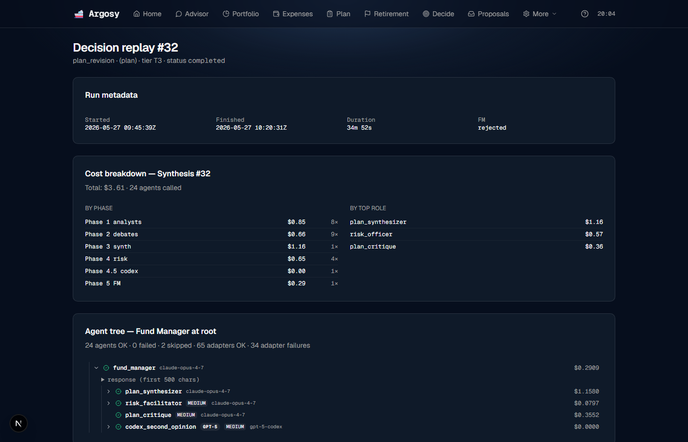
The deepest view in the app. Lands here from the Home page's DecisionAccordion "Drill in →" links and from the in-flight-synthesis banner. One page per decision_runs.id.
Top: a VerdictCard showing the FM's final verdict (APPROVE / APPROVE_WITH_CONDITIONS / REJECT) + the decision_kind (plan_revision, trade_proposal, delta_pushback, daily_brief) + duration in human terms (e.g. "38 min" — and yes, the page corrects for the SQLite-naive-timestamp UTC-offset bug so the duration is accurate regardless of your local timezone).
Middle: the FM-rooted Agent Tree. Every agent that ran is a node; parent→child edges reflect orchestration (FM at root, sub-agents below). Each node renders agent role + status (ok / degraded / failed / skipped) + confidence + a one-line excerpt. Click to drill into the full prompt/response/citations for that one run. The codex_second_opinion node is special: it carries structured cross-engine findings (BLOCKER / AMBER / YELLOW) that are surfaced inline instead of buried in the transcript.
Bottom: Cost breakdown. Total $-spend for the run, split two ways — by phase (Phase 1 analysts / Phase 2 debates / Phase 3 synth / Phase 4 risk / Phase 4.5 codex / Phase 5 FM) and by top role. Useful when a synthesis runs hot and you want to know where the budget went. Below: a Mermaid sequence diagram of the whole flow if you want the alternative view.
— Self-review trends (the list view)
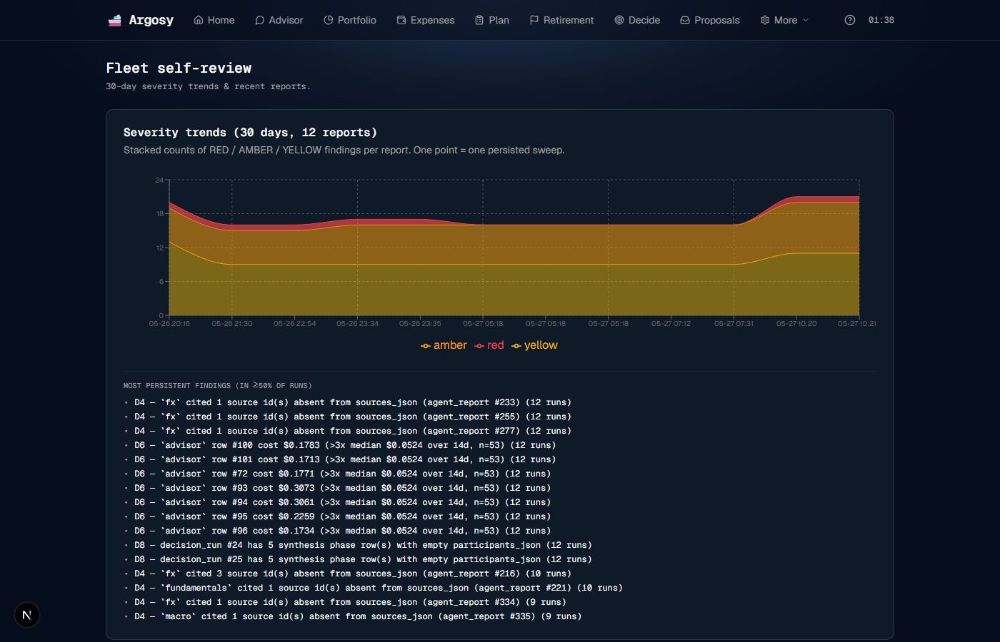
The Home banner links to a specific report at . The list-index at (no id) shows the 30-day trend across all reports — useful for "is the AMBER count going up over time?" without having to open each report.
Top: a stacked-area chart over the last 30 days. RED layered on top of AMBER on top of YELLOW so a single RED spike doesn't get hidden inside a tall YELLOW band. X-axis is "MM-DD HH:mm" (post-synthesis reports cluster around plan revisions, so time-of-day matters).
Below the chart: persistent findings — the specific detectors that keep tripping across recent runs, named explicitly so the fix priority is obvious without opening each report.
Bottom: the most-recent 50 reports as clickable rows, each linking to its viewer.
— Full anomaly viewer
The Home banner surfaces the first RED anomaly from the most-recent report; is where the rest live. Lands here from the banner's "view details →" link.
Each report row shows: severity pill (RED / AMBER / YELLOW), the watchlist entry name (e.g. "card-2923-fee-waiver"), the observation in plain English, suggested action, "last seen" timestamp, and the agent's confidence.
Below the anomaly list: a watchlist-status snapshot — per-entry state (NORMAL / ALERT / RESOLVED / UNKNOWN) so you can see what the agent was monitoring at the moment this report fired.
Transaction-level anomaly buckets — A / B / C / D
Separate from the watchlist-anomaly system above. The transaction-level detector reads expense_transactions on every ingest pass and flags rows across four buckets. Findings surface as inline badges on transaction rows in Transactions tab, and as an AnomalyHighlights card on the Home page when severity is amber-or-higher.
- Bucket A — amount outliers. Per-category weighted baseline (10%-trimmed mean + MAD around it, shrunken toward a global cross-category baseline when sample is small). A transaction is flagged when its amount is more than 3 robust-z from the per-category center. Groceries and dining have separate baselines so a NIS 800 dinner doesn't flag against a NIS 800 grocery run.
- Bucket B — watchlist + recurring. The 4-state machine for things like Card 2923's fee-waiver promotion: NORMAL → ALERT (line missing) → RESOLVED (line back) → DORMANT (auto-stops nagging after 2 missed cycles, so an expired promotion doesn't keep firing forever).
- Bucket C — novel merchant + category drift. New counterparty appears with a non-trivial amount; or a known counterparty's category changes mid-stream (mortgage bank suddenly classified as utility — probably a parser regression).
- Bucket D — cross-card duplicates. Same merchant + amount + date appears on two cards within a 48h window (genuine duplicate charge vs. expected — e.g. you ran the same card twice by mistake).
Dismissing an inline badge marks the dedup_key as acknowledged so the same finding doesn't refire. Each bucket has its own dedup_key formula so a fresh occurrence (different month, different amount band) fires cleanly.
+ — Upcoming RSU vests
The UpcomingVestCard sits between the Holistic Timeline and the Verdict on , and at the top of . Projects the next four per-grant vests at +90d cadence from the latest historical vest. Per vest:
- Header: "Vesting in N days: K NVDA shares (grant ABC)" + expected vest date.
- Estimated gross USD using the latest NVDA spot price from the most-recent portfolio snapshot.
- Three-scenario post-tax estimates: nominal (plan-assumed marginal rate, default 42%), effective (your prior-year filed rate, default 30%), conservative (max(47%, nominal+5%) — the supplemental-withholding worst case). The nominal column drives the allocation preview.
- Allocation preview — if this cash lands today, where it would go per your plan targets (long-term focus by default).
- "Add as life event →" CTA prefills the form with the post-tax-nominal amount + vest date.
— Per-holding thesis cards
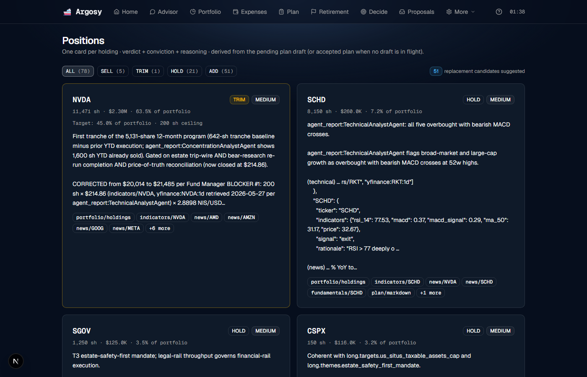
One card per holding: ticker · current shares · current weight % · USD value. Each card carries the agent fleet's verdict (HOLD / BUY / TRIM / SELL / ADD) + conviction (HIGH / MEDIUM / LOW) + a paragraph of reasoning + cited sources. Pulled from the pending plan draft (or the accepted plan when no draft is in flight).
Same component is also rendered inside — is the permalink so older bookmarks keep working. Easier to land on directly if all you want is "what does the fleet think about NVDA right now?"
+ — First-login + legacy redirect
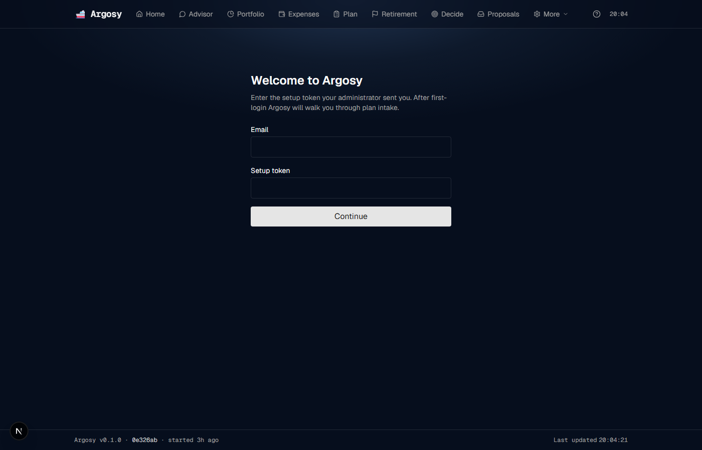
is the new-tenant landing page. Takes an email + a setup token (from the admin or the invite URL's ?token= param), signs the user in via NextAuth, and drops them on the home page where the Advisor's gap-tracker takes over (see §5). Not in the main nav — first-login of a fresh tenant only.
is a thin redirect to . Intake happens inside the persistent Advisor relationship (gap-tracker sidebar + free-form Q&A); this stub stays so older bookmarks land on the right surface.
19. Monitor agent
The monitor agent runs nightly via cron and on-demand whenever a new snapshot persists. It writes rows to the monitor_flags table; those rows feed the Red-Flag Strip on Home (§8). Three trigger families:
Agent drift
Drift fires when an agent's per-position confidence or numeric output diverges from the prior-snapshot value. Hysteresis:
- Relative delta ≥ 10% sustained for 2 consecutive snapshots, AND absolute delta ≥ $5K, OR
- Relative delta ≥ 20% in a single snapshot, AND absolute delta ≥ $5K.
The dual threshold avoids both noise (single-shot fluctuations) and silence (slow drift across many snapshots).
Monte Carlo regression
The monthly retirement MC compares the latest P(solvent at 95) against the prior month's value. A drop of 5 percentage points or more fires a flag. Recovery (the next month's MC bouncing back) does not auto-dismiss the historical flag.
Macro
Macro signals from the news pipeline (§20) can fire a flag when the materiality classifier returns a high-severity verdict against a watchlist item.
20. News pipeline
Daily automation that brings external signal into the system. Two stages, with a hard contract between them.
Stage 1 — Deterministic extractor
Pulls from RSS feeds + macro data feeds on the configured cadence. No LLM at this stage. The extractor parses each item, dedupes against prior fetches, and writes raw entries to the news cache. Sources include the major financial wires and macro indicator endpoints.
Stage 2 — Materiality classifier
An Opus-backed agent reads structured metadata from Stage 1 (title, summary, source, tickers extracted by Stage 1, dates, headline numbers) and classifies materiality: HIGH (likely fires a monitor flag), MEDIUM (logged), LOW (discarded). On HIGH the classifier recommends a flag and the monitor agent (§19) writes the row.
21. — scheduled jobs
The admin surface for every scheduled job in the system. Lists each registered job with its cron expression, last-run timestamp, last-run outcome (ok / failed / running), and per-job controls (Run now, Stop, Reconnect where applicable).
Access is gated by an admin token. The top of the page has a single text input — paste the token (from ~/.argosy/admin_token) and the controls light up. Without a token the page renders in read-only mode.
| Job | Cadence | What it does |
|---|---|---|
| News pipeline | 17:00 IDT daily | RSS + macro fetch then materiality classification (§20) |
| State observer | 17:00 IDT daily | Snapshot + diff + LLM flag emit (§22) |
| Alpha-report analyst | 18:00 IDT daily | Opus analysis of long-form Discord alpha-report posts → tone + per-ticker signals + structural picks + cautions; writes alpha_report_analyses + per-ticker predictions (source discord_alpha_report) |
| Predictions evaluator | 03:30 IDT daily | Score expired predictions, update source-reliability weights (§23) |
| Retention loop | 03:00 IDT daily | Prune old job_runs + state_snapshots per retention policy |
| Inferred life-event detector | 03:00 IDT daily | Scan transactions for phase changes (§26) |
| Weekly email digest | Friday 08:00 IDT | Stitched-summary email (§25) |
| Discord listener | long-running | Live bot connection; Reconnect button to bounce the websocket |
| Predictions Discord backfill | manual-only | One-shot REST backfill of the last 14 days of Discord channel posts into the predictions ledger. Fire from Run now; no cron schedule. |
Every run writes a row to the job_runs audit table. Click any past run to see its log + duration + emitted artefacts (flags written, predictions scored, etc.).
22. State observer — the macro-shift watchdog
The state observer runs daily at 17:00 IDT. It collects a six-section snapshot of current state (positions, cash, FX, plan baseline, recent transactions, recent agent outputs), diffs it against the prior snapshot and against the active plan's baseline assumptions, and hands the diff to an Opus agent. The agent doesn't run per-symptom detectors — it looks at the whole diff and flags whatever is emergently out of line.
Concrete example: when USD/NIS moves from 3.6 to 2.8 over a few months, no hand-coded FX-drift detector is needed. The observer sees that the plan baseline assumed 3.6, the current state is 2.8, and the gap is large enough that the agent emits a critical flag with reasoning. The same pathway catches anything else: an unexpected drop in monthly cash flow, a position that has drifted far outside its plan-target weight, an outsized accumulation of cash, a regime shift in volatility.
Flags land in the monitor_flags table and surface on the Home Red-Flag Strip (§8). Each flag carries severity (critical / warning / informational), the observation in plain English, the diff fields that triggered it, and a dedup key so re-fires don't duplicate.
Warning- and critical-severity flags also kick the action proposer (Opus): an agent that reads the flag + the snapshot diff and emits 0-3 structured action proposals on (Allocate / Repatriate currency / Rebalance / Replan / Add life-event phase / Update plan assumption / Set watchlist / Note only — see §16). Cooldown: 24h per (flag_kind, primary_field, user_id) — re-firing the same flag within the window short-circuits the proposer.
23. Predictions ledger + source reliability
Every directional call from any source is recorded as a prediction the moment it is made. Sources include short-form Discord posts (discord), long-form Discord alpha reports analyzed by the alpha-report analyst (discord_alpha_report), news-signal classifications, per-position theses from the agent fleet, observer flags, and the news-analyst Opus agent. Each prediction carries the source, the assertion (e.g. "NVDA up ≥ 10% within 30d"), the issue date, the evaluation window, and the method by which it will be scored when the window closes.
The predictions evaluator runs daily at 03:30 IDT. It finds every prediction whose window has closed, scores the outcome via the method recorded at issue time, and writes a row to prediction_outcomes. From those outcomes Argosy maintains a source_reliability view: per-source hit rate, calibration score, and recency-weighted reliability.
The reliability weights flow back into three consumers: the plan synthesizer (weights Discord and news-signal evidence by recent source reliability), the news analyst (down-weights low-reliability outlets), and the state observer (uses internal-agent reliability when deciding whether a prior flag's prediction came true).
The Discord-channel 14-day backfill is a manual trigger via . Click Run now on the Discord backfill job to seed historical predictions from the last 14 days of channel posts.
24. Observer → replan auto-fire
When the state observer (§22) emits a critical flag, the plan is automatically re-synthesized. Example trigger: FX drift > 20% from the plan's baseline assumption. The replan runs the full 5-phase synthesis with the observer's flag context threaded into every agent's prompt.
Two cooldowns guard against thrashing: per-trigger cooldown of 72 hours (the same emergent condition cannot fire a second replan within 72h), and a global cap of 4 replans within any 72h window. Warning-level flags do not auto-fire a replan — they log a dry-run row in the observer audit table that says "would have replanned if critical." Informational flags log nothing replan-side; they only render on the Red-Flag Strip.
The resulting draft lands on with a banner indicating it was observer-triggered, and a "Replan" row appears on the queue for explicit acceptance.
25.
Two notification channels are available, both opt-in:
- Browser web push — click Enable push notifications in the PushSubscriptionCard. The browser will prompt for permission; on accept, a subscription is registered against your account and the system can wake your browser with notifications even when the tab is closed. Server-side requires a VAPID keypair at
~/.argosy/vapid_creds.json(vapid_public_key,vapid_private_key,subject_uri); generate with thepy-vapidCLI. - Weekly email digest — Friday 08:00 IDT. A stitched summary of the week: new flags, predictions resolved, proposals awaiting decision, and key cashflow deltas. Enable the toggle to start receiving it. Server-side requires
ARGOSY_SMTP_*env vars (host, port, user, password, from-address).
Below the channel toggles sits a preferences matrix — channel × severity × kind. Each cell is a toggle. Example settings: route every critical observer flag to push but only warnings to the weekly email; suppress informational flags from both channels; route inferred life-event proposals to email only. The defaults are tuned conservatively (only critical events on push, full digest weekly).
26. Inferred life events
A daily scan at 03:00 IDT walks the transaction history looking for phase changes that the user hasn't entered manually on . Examples of what it looks for: tuition payments that stopped (kid finished school), recurring transfers consistent with car payments, wedding-scale transfers (one-shot outlays of a certain shape), monthly support payments that started or stopped (kid moved out / parent moved in).
For new users the detector runs in shadow mode for the first 30 days. It logs its candidate findings to an internal table so the system can learn the household's baseline patterns, but nothing surfaces on the proposals queue. After day 30 the shadow window closes and confirmed phase-change candidates appear as "Add inferred life event" rows on . Each row carries the detector's best guess (shape + kind + amount + effective date) plus the supporting transaction sample so you can verify before accepting.
On Accept the proposed event is written to life_events with the right shape (one-shot / recurring / phase-change) and immediately influences the cashflow projection and the Holistic Timeline. On Reject the candidate is suppressed and the detector won't re-fire on the same evidence.
27. Known gaps
Things that don't work yet, or that the UI doesn't help with. None block usage; all worsen UX.
unclear, the banner deep-links to for manual review. There is no guided clarification flow on yet.
WindfallCard () persist rows in allocation_actions with action_source='windfall'; Accept and Defer on the UnallocatedCashCard () persist rows in allocation_actions with action_source='unallocated_cash'. Pills ("✓ Accepted" / "↻ Deferred") render inline on both. Neither path yet promotes an accepted row into a PrioritizedAction on the home-page action-items widget.Suggested fix: background job that walks
allocation_actions for decided_status='accepted' + proposal_id IS NULL, calls the matching action_engine.create_from_*, fills the FK.
Suggested fix: ⌘K / Ctrl-K palette searching audit_log + transactions + plans.
auto_execute_if_eligible function exists but is uncalled from any production code path.Suggested fix: wire
auto_execute_if_eligible into the post-FM decision-run close hook for T0/T1 + account_class='limited' + mode != queue_only.
28. System health
Two live surfaces tell you whether things are running:
- (§21) — every scheduled job's last-run timestamp + outcome. The fastest read on "did anything run today?"
- (§17) — flat audit log of every decision and event.
The backend serves on port 8000; the UI on port 1337. Restart both after a code change before judging "is something broken" — a stale uvicorn process is the most common false alarm.